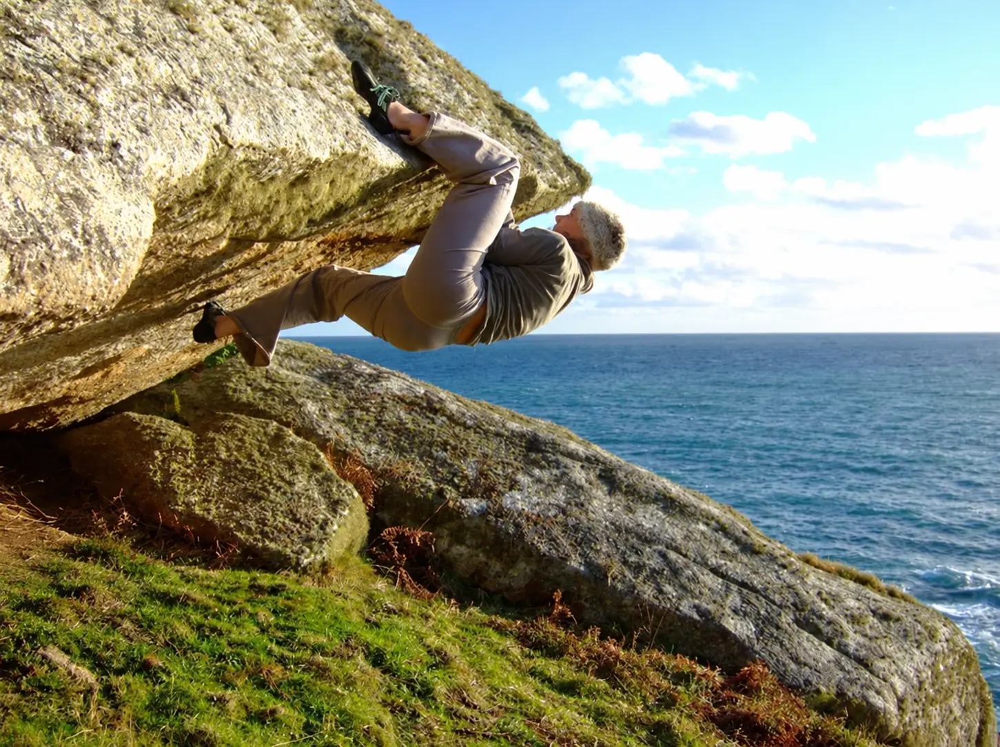

The Breath Hold You Cannot See in BR
Climbers commonly pause their breathing during lock-offs, deadpoints, difficult clips, gear placements and balance-critical movement. Pranaclimb uses the practical term micro-breath hold for these brief interruptions. It is a field-observation term rather than a standard clinical classification.
During the pause, no breath is available to count. A 60-second observation window can therefore show a low Raw BR even when the climber is working at very high intensity. What happens after release also matters: the next breath may be larger, sharper or followed by a short run of faster breathing.
Four Things a Breath Hold Can Change
🫁 Gas Exchange Pauses
Ventilation stops during the hold, while gas exchange between the alveoli and blood continues from finite lung stores. Oxygen falls and CO₂ rises progressively, with the rate shaped by hold duration, starting lung volume and the metabolic demand of the movement.
💪 Bracing & Pressure
A brief closed-glottis effort can raise intra-abdominal and intrathoracic pressure and contribute to trunk rigidity. Not every breath hold is a full Valsalva manoeuvre; the pressure generated depends on the action and effort.
💨 The Release Breath
Breathing resumes according to the accumulated respiratory and exercise drive. A decisive exhale, grunt, strong inhale or larger recovery breath may form part of the transition back to ventilation.
🧠 Movement Strategy
Breath holding can accompany concentration, threat, force production, precision or a learned movement habit. The surrounding move and the breathing that follows provide the useful coaching context.
“Missed Breaths” — Useful Picture, Not a Physiological Conversion
If a climber is breathing at 30 breaths per minute, one average cycle occupies about two seconds. A four-second hold could therefore span the clock time in which roughly two breaths might otherwise have appeared. That is a useful way to understand why Raw BR can under-represent a stop–start pattern.
It does not mean that the hold is physiologically identical to “missing two breaths”. Breath depth, timing, gas exchange, starting lung volume, muscular work and the post-hold response all vary. Pranaclimb therefore reports the observed Raw BR and documents each breathing expression before applying its separate Effective-BR model.
The Pranaclimb Breath-Hold Adjustment
The adjustment is an operational field-modelling rule designed to make breath-hold behaviour visible in analysis. It is not a measurement of CO₂, oxygen consumption, energy expenditure or cardiovascular load.
| Observed Hold | Effective-BR Addition | How It Is Reported |
|---|---|---|
| <1 second | +2 BPM | Very brief interruption or bracing expression |
| 1–2 seconds | +4 BPM | Short hold within the movement sequence |
| 2–3 seconds | +6 BPM | Clearly sustained interruption |
| 3–4 seconds | +8 BPM | Extended hold during high-tension movement |
| >4 seconds | +10 BPM | Long hold requiring explicit notation and context |
Brief Bracing and Extended Holding
Breath holds are not automatically inefficient. Their meaning depends on what the climber is doing.
⚡ Brief Tactical Bracing
A short hold may help organise trunk stiffness for a powerful or precise move. The climber releases it promptly and continues with a workable breathing pattern.
🌊 Extended or Repeated Holding
Longer or closely repeated holds create a more discontinuous pattern. The coach observes the move, Raw BR, breathing expressions, CR-10 RPE and the quality of breathing after release.
When a Breath Hold Becomes a Training Stimulus
Breath holding during climbing sits on a continuum. A momentary pause may support bracing, precision and force production. As end-expiratory holds become longer, repeated and combined with intense exercise, they can create a progressively stronger hypoxic–hypercapnic stimulus.
🧗 Movement Expression
A naturally occurring hold of a few seconds is first recorded as part of the climber’s breathing and movement pattern. Its immediate purpose may be mechanical, attentional or tactical.
🔁 Voluntary Hypoventilation
Research protocols commonly combine exercise with repeated 4–8-second holds following a normal expiration. The recovery interval, exercise intensity and number of repetitions determine the total training dose.
🔥 Maximal Exercise Holds
Holding after expiration until the breaking point during high-intensity exercise creates a much larger challenge. Oxygen availability falls, CO₂ rises and cardiovascular, cerebral and muscular responses interact.
🩸 Pre-Exercise Apnoea Priming
Series of maximal apnoeas performed before exercise are being studied as a priming method. These protocols may alter splenic emptying, circulating red-cell indices and the physiological response to subsequent exercise.
What the Exercise Studies Show
In eight trained runners, repeated supramaximal running at 125% of maximal aerobic velocity with maximal end-expiratory holds produced a substantial acute response. The holds averaged 10.1 seconds; peak end-tidal CO₂ reached 74.8 mmHg, arterial oxygen saturation fell to a nadir of approximately 75%, cerebral and muscle oxygenation decreased, and RPE was higher than during matched running with unrestricted breathing.
Training studies add another layer. Twenty elite judo athletes completed eight repeated-sprint rowing sessions over four weeks. The group using maximal end-expiratory breath holds maintained more power during the later repetitions of a repeated-sprint test and showed a smaller overall performance decrement five days after training. Maximum power, oxygen uptake and performance in the first four repetitions remained unchanged, indicating a specific adaptation in the ability to repeat intense efforts. The effect was not present at the 12-day follow-up.
Pre-exercise priming research is also developing. In 17 well-trained participants, five maximal breath holds with cold-water face immersion increased haematocrit, haemoglobin concentration and circulating red-cell count before a graded treadmill test. The second ventilatory threshold occurred 3.14% later and time to exhaustion increased by 0.75%. A separate competitive-running study of five serial apnoeas contributes to this emerging line of investigation.
Does a Micro-Hold Activate the Spleen?
During maximal climbing, brief interruptions to ventilation may accompany lock-offs, dynamic movements and high-force crux sequences. Some may include Valsalva-like pressure generation that supports thoracoabdominal bracing and force transfer. Separate laboratory studies show that 30-second breath holds and Valsalva can rapidly reduce spleen volume, while repeated or longer apnoea protocols can transiently increase circulating haemoglobin.
It is not yet known whether the shorter breath holds observed during climbing cause a meaningful erythrocyte release or improve performance. Pranaclimb therefore records the duration and context of each breath hold within Effective BR, while treating splenic contraction as a testable physiological hypothesis rather than an inferred response.
The evidence, protocol differences and timescales are examined in Spleen Contraction, Breath Holding and Performance in Climbing.
Practical Coaching: Observe, Coordinate, Recover
- 👀Notice the pattern on easy terrain — identify which movements naturally invite a pause, grunt, sharp exhale or strong inhale.
- ⚡Keep useful bracing purposeful — when a move benefits from a brief hold, organise the body, complete the move and return to ventilation.
- 💨Explore RP Sync — coordinate a short exhale or vocal expression with movement and notice how it changes timing, tension and confidence.
- 📊Use matched observations — compare Raw BR, Effective BR, CR-10 RPE and HRR₆₀ across similar climbing tasks.
- 🫁Build breath-hold familiarity progressively — begin with controlled dry practice, then transfer brief, planned holds to easy and securely protected climbing where appropriate. BOLT-style, movement-apnoea and other observations each retain their own protocol and interpretation.
- 🔄Follow the release — observe how smoothly breathing returns and which cue helps the climber find a workable rhythm.
“Briefly brace. Release. Breathe into the next move.”— Pranaclimb
References
- Elia, A., & Lemaître, F. (2025). The application of breath-holding in sports: physiological effects, challenges, and future directions. European Journal of Applied Physiology, 125, 2049–2065. https://doi.org/10.1007/s00421-025-05752-y
- Hackett, D. A., & Chow, C.-M. (2013). The Valsalva maneuver: its effect on intra-abdominal pressure and safety issues during resistance exercise. Journal of Strength and Conditioning Research, 27(8), 2338–2345. https://doi.org/10.1519/JSC.0b013e31827de07d
- Nicolò, A., Marcora, S. M., & Sacchetti, M. (2016). Respiratory frequency is strongly associated with perceived exertion during time trials of different duration. Journal of Sports Sciences, 34(13), 1199–1206. https://doi.org/10.1080/02640414.2015.1102315
- Nicolò, A., Massaroni, C., Passfield, L., & Sacchetti, M. (2017). Respiratory frequency during exercise: the neglected physiological measure. Frontiers in Physiology, 8, 922. https://doi.org/10.3389/fphys.2017.00922
- Woorons, X., Daussin, F., Combes, A., & Mucci, P. (2024). Physiological responses to supramaximal running exercise with end-expiratory breath holding up to the breaking point. Journal of Human Kinetics, 90, 111–123. https://doi.org/10.5114/jhk/174465
- Woorons, X., Faucher, C., Dufour, S. P., et al. (2024). Hypoventilation training including maximal end-expiratory breath holding improves the ability to repeat high-intensity efforts in elite judo athletes. Frontiers in Physiology, 15, 1441696. https://doi.org/10.3389/fphys.2024.1441696
- Christoulas, Y., Bourdas, D. I., Michailidis, Y., et al. (2025). Acute ergogenic effects of repetitive maximal breath-holding maneuvers on hematological and physiological responses: a graded exercise test investigation. European Journal of Applied Physiology, 125, 739–751. https://doi.org/10.1007/s00421-024-05624-x
- Barlow, M. J., Ross, C., Cockrell, R., et al. (2025). Effects of five serial apnoeas prior to a running time trial in competitive athletes. Journal of Science in Sport and Exercise, 7, 391–398. https://doi.org/10.1007/s42978-024-00296-7